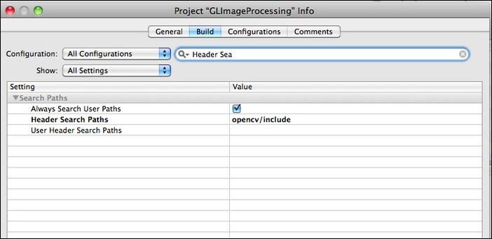

After publishing Building OpenCV for iOS article many of readers asked me how to use OpenCV within ObjectiveC code, because they encountered compilation errors. In this post I’ll show you how to use OpenCV and ObjectiveC to make some image processing.
This post is outdated
Current version of OpenCV supports iOS toolchain and can be build in much easier way. You are welcome to read this post for educational purposes. It's 99.9% chance that you will not be able to use OpenCV as described here. Please use my OpenCV Tutorial project if you want to learn how to use OpenCV on iOS platform.
Please use my OpenCV Tutorial project if you want to learn how to use OpenCV on iOS platform.
In this post I’ll use GLImageProcessing sample demo from Apple. Also you will need precompiled OpenCV for iPhone. How to make it read here. I’ve copied all OpenCV stuff to “opencv” folder into the GLImageProcessing. Here is project directory structure:
Now, let’s add OpenCV to our project. **First step - **specify the place, where the OpenCV headers are located. Add the path to OpenCV headers to the “Header Search Paths” property:

Second step - set up path where the OpenCV libraries are. Please note: you will need to repeat this step for each configuration (debug/release, device/simulator) because of directory structure of the OpenCV libs. Add path of the OpenCV libraries to the “Library Search Paths” property (for release device this will be “opencv/lib/iphoneos/Release” if you follow directory structure listed above). Third step: Tell linker to include OpenCV to the output executable:

As you can see i prefer use linker flags instead using XCode UI (Targets -> GLImageProcessing -> Link Binary With Libraries -> Add -> Existing Files…). There are several reasons: i prefer this way because i don’t trust XCode :) (Actually because for all my projects i use cross-platform build system which allows to do such things much easies, but this is a topic for another article). Now, add #include
opencv/include/opencv2/core/core.hpp:432: error: statement-expressions are allowed only inside functions
opencv/include/opencv2/core/core.hpp:432: confused by earlier errors, bailing out
These errors are caused by MIN symbol, which is a macro in OpenCV and a function, defined somewhere in UIKit or other frameworks..Simple solution - include OpenCV before iOS frameworks. So…with all these fixes all builds fine. Now it’s time to add some OpenCV code.. Let’s change the matrix multiplication code! File Imaging.cpp
// Matrix Utilities for Hue rotation
static void matrixmult(float a[4][4], float b[4][4], float c[4][4])
{
int x, y;
float temp[4][4];
for(y=0; y<4; y++)
for(x=0; x<4; x++)
temp[y][x] = b[y][0] * a[0][x] +
b[y][1] * a[1][x] +
b[y][2] * a[2][x] +
b[y][3] * a[3][x];
for(y=0; y<4; y++)
for(x=0; x<4; x++)
c[y][x] = temp[y][x];
}
A little crappy code, isn’t it? Let’s rewrite it!
// Matrix Utilities for Hue rotation
static void matrixmult(float a[4][4], float b[4][4], float c[4][4])
{
cv::Mat(4,4,CV_32FC1, c) = cv::Mat(4,4,CV_32FC1, a) * cv::Mat(4,4,CV_32FC1,b);
}
A bit of comments. cv::Mat is a type of OpenCV matrix. We initialize a matrix view, which takes data from the float4 array, but not copy it. Result of multiplication of two views (a and b) assigned to view c which is a result. Hit “Build and Run”, and here we go:
{kind=link}

This is a very simple example which demonstrates that you can use OpenCV even with ObjectiveC without any problems. Good luck in your projects!